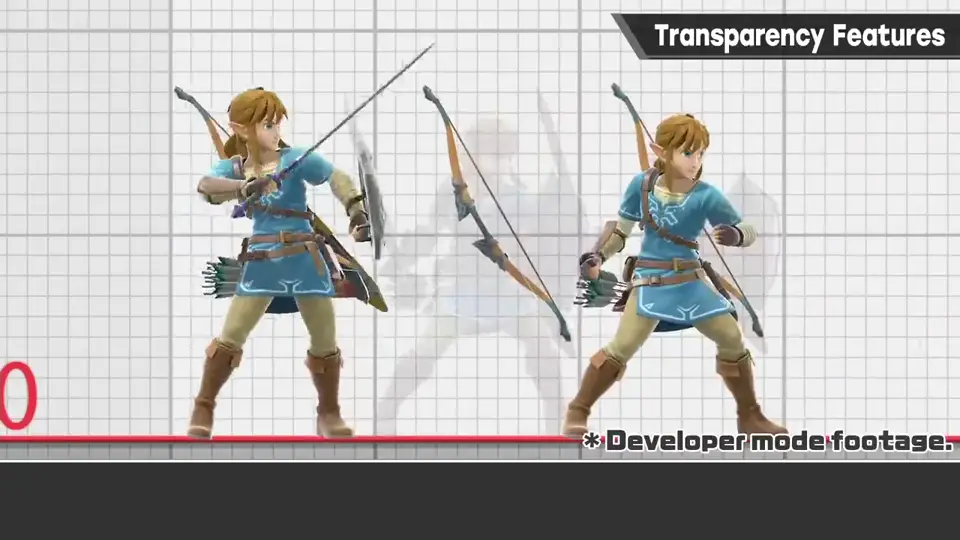
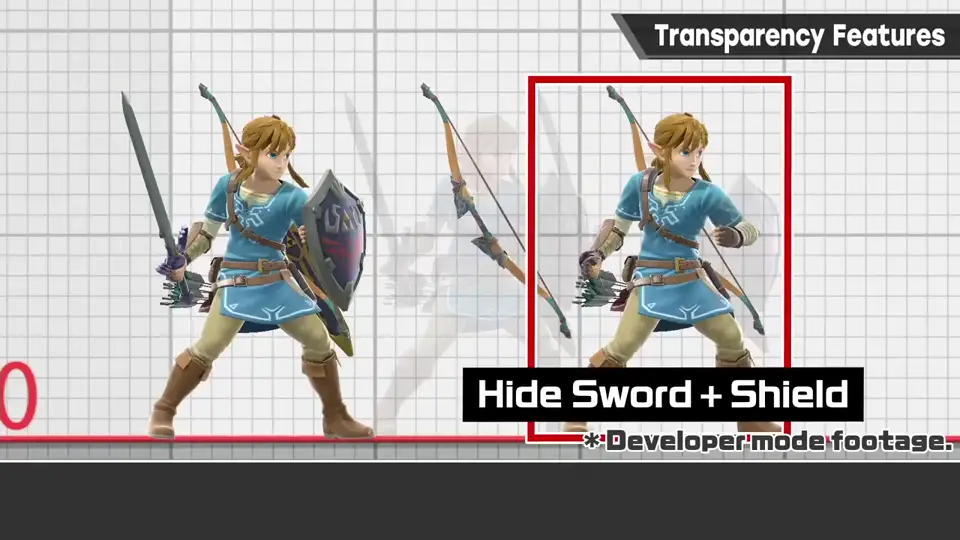
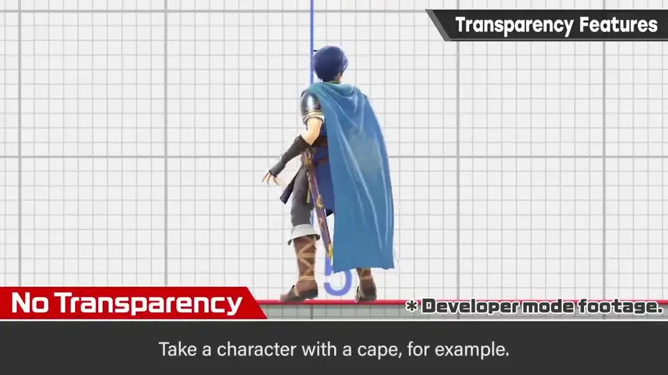
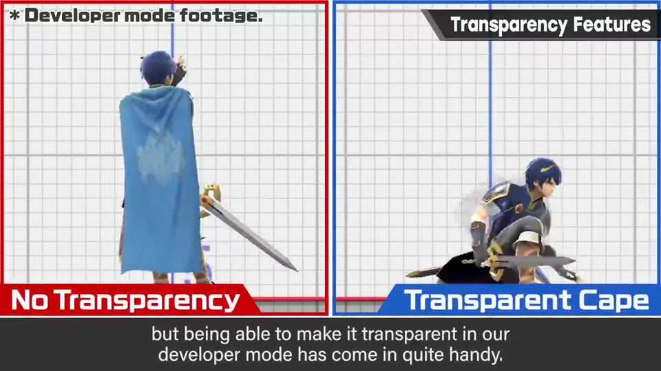
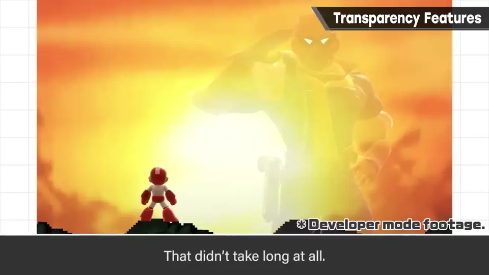
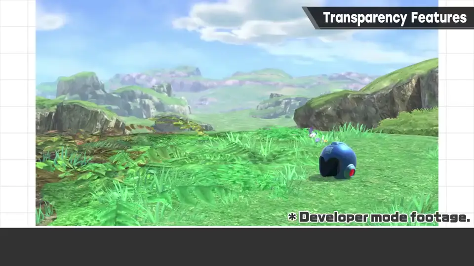
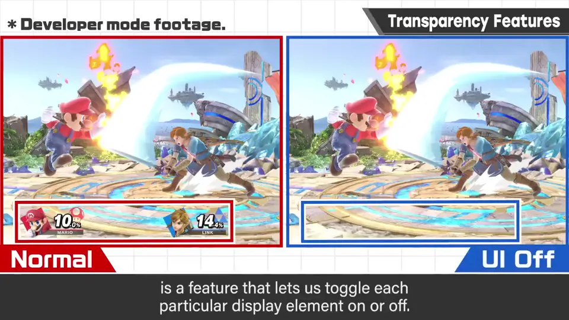
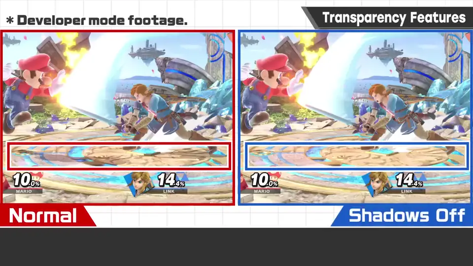
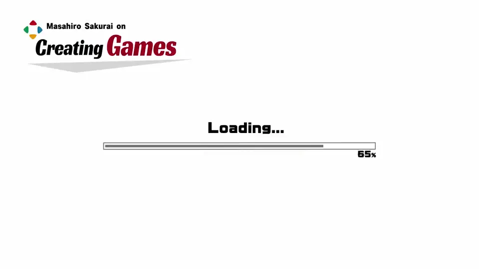

速览
介绍一个他觉得放进开发模式很方便的东西。《大乱斗 特别版》可以指定斗士模型的一部分使其透明：指定全身或局部，半透明或消去（例如隐藏林克的剑和盾）。用来干什么？为了好好确认动作。例如披风角色，披风会挡住、看不清姿势；以前也会靠缩放或改模型把披风去掉，但在开发模式里能做到就用起来很方便，在开发组外的确认中也有用。他曾去某 3D 格斗游戏现场，那里也能把衣服和摆动物去掉来呈现——外观先不论，动作看起来确实清楚。这个功能实装后马上拍的就是这张「今日一张」，还能拍各种照片。另外，比起特意让角色部分透明更为一般的，是按元素开关各种显示的功能（UI、2P、特效、阴影、后期效果等），作为功能也不可或缺，经常使用。虽然是开发方才能用的模式，但他相当推荐部分透明功能。
1. 指定部位透明 0:03
介绍一个他觉得放进开发模式会很方便的功能。《大乱斗 特别版》可以指定斗士模型的一部分使其透明：指定全身或部分，半透明或消去。


2. 为了看清动作 0:24
用来做什么？为了仔细确认动作。例如带披风的角色，披风有时会挡住，看不清姿势。


以前也会通过缩放或模型来去掉披风，但能在开发模式中做到，用起来就很方便；在开发组以外的确认中也有帮助。
3. 立刻拍了「今日一张」 1:03
这个功能实装后，马上拍的就是这张「今日一张」，之后也能拍出各种照片了。


4. 按元素开关显示 1:28
与特意让角色部分透明相比更一般的，是按元素开关各种显示的功能。作为功能不可或缺，他们也经常使用。



自测题
1. 部分透明功能主要用来做什么？
仔细确认动作，例如披风挡住姿势时让披风透明。 0:30
2. 除了部分透明，还有什么更一般的显示功能？
按元素开关显示：UI、2P、特效、阴影、后期效果等。 1:30
3. 以前没有透明化功能时，怎么去掉挡视线的披风？
只能靠把它缩放到很小或修改模型来去掉。 0:40